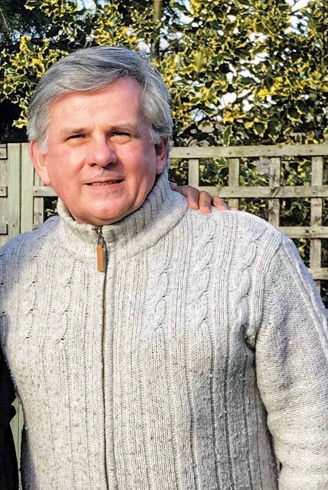
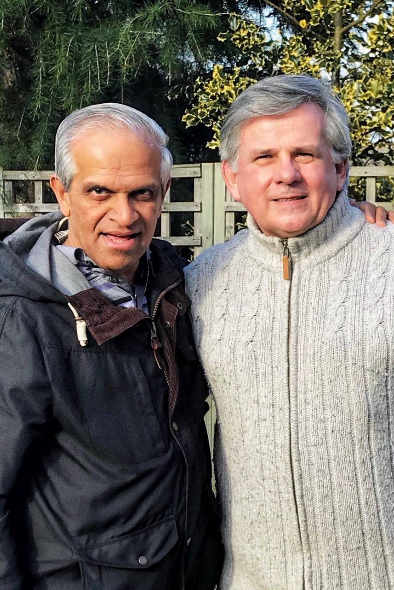

An amazing encounter my friend Huw Priday had with our Dear Lord.
Please do read it to experience the Vision.
OVERVIEW
The Lord has laid on my heart a vision for how classical music will be used in years to come for a mighty new work of the Kingdom. It will be a powerful, worldwide channel for worship, praise, witness and evangelism. The vision entails classically trained musicians and singers challenging the darkness as salt and light. I see them as 21st Century Levites, using their giftings to make a sweet song to the Lord that will have unprecedented impact. There are many such professional musicians all over the world and there are great stirrings of interest among the believing professional communities wherever I have shared this.
A key element is the creation of a Centre of Excellence as a focus for this new movement. Here, believing professional musicians and singers will gather to pray, worship, study, practice and perform together. They will seek the Father’s face and achieve greater intimacy with Him. I believe that the Lord has identified locations for at least three such Centres of Excellence in the UK and Europe. These will change the spiritual atmospheres of nations. I sense that the first one will be in Wales and the Lord has identified the location.
The Lord sowed the seeds of this vision with me 33 years ago. He has taken me on a profound personal journey since then. He allowed me to taste the success of an international solo career early on. Then followed the painful process of laying it all down. He has led me faithfully through the most challenging, impossible times. My wife Elizabeth, herself a classical singer of considerable repute, is alongside me in this. We sense that the Father has been preparing our hearts and shaping us to fit the vision he gave me all those years ago.
How the vision happened
While studying at Guildhall School of Music in London the Lord gave me a prophetic word through my then Assemblies of God Pastor, Kerry Jenkins. It was: "I am going to use classically trained musicians and singers to evangelize the world in a way the world has not yet seen".
The vision itself came to me in the Alte Oper in Frankfurt in 1985 during a performance we were giving of Mozart's Grand Mass in C under the baton of Sir George Solti. The Lord took me up in the Spirit and showed me the audience below metamorphosed into a worshipping community. I saw transparent columns of praise rising up from these people to the throne room of heaven and I heard the Holy Spirit say " I want the concert halls, cathedrals, theatres and stadiums filled with the praises of my people".
Immediately the Lord turned me around and I saw myself and my colleagues on stage, again transformed from the concert setting of the present moment into a prophetic picture of a time to come. I saw in the Spirit a stage filled with worshippers, orchestra, chorus, soloists and conductor who were all dressed in white robes and we were performing music that I had never heard before. It was a Heavenly "Sound" that penetrated my heart to the very depths of my being. Then I "saw" the "Sound" that I had heard and I could not describe what it was that I was seeing.
The seeing-the-sound phenomenon fell into place some years ago when I met two men on separate occasions, one a quantum physicist and one a "seer". Both men were Holy Spirit filled. The physicist explained what I had seen in scientific terms. The seer saw and heard this "Sound" at our very first meeting and even tried to emulate it! He told me that what he was being shown was that this heavenly sound would be released upon the earth at an appointed time to come and would change the spiritual atmosphere of nations right across the globe.
Galatians 2:20 is a foundational scripture for me: "For you were crucified with Christ. It is no longer I that live but Christ lives in me and the life I now live in this flesh, I live by the faith of the Son of God who loved me and gave Himself for me". The other verse I received which is to be the scripture over the Centres of Excellence is Psalm 87: 7 "The musicians and singers will say all my springs are in Thee O Lord".
NOTE. I believe that there is a significant Jewish connection to this vision. George Solti, conductor at the performance at which it was given, was a world leading Jewish conductor who lost most of his family in the Holocaust. A number of the administrative staff at the opera house during the war were also Jewish. They were arrested and taken to the death camps. It is no coincidence that it was in this setting and context that Father God gave me the vision which has burned with increasing fervor in my heart for more than three decades.
Outworking
I sense that, through God’s gift of music, we are being called to build bridges with nations and into connection with governments and leaders of nations as well as with ordinary people. This has already begun to happen.
The vision is to take these classically trained worshippers into cathedrals, theatres and stadiums where we will corporately worship together before these audiences. The Lord inhabits the praises of His people, and as we promote these events around the globe, audiences will be stepping into His Presence. They will encounter the Living God in a powerful and transformational way. I have personally witnessed this happen on a few occasions over my journey of faith. It is truly awesome in the deepest sense of that word.
Moreover, the Lord seems to have been working to this end in the hearts of many professional musicians and singers over the years. I have also met people who have had visions to build stadiums, amphitheaters and worship centres around the world and other anointed individuals who have received “divine downloads” of amazing compositions that are to be performed in these places. The ground is fertile. For example, three quarters of the members of one of the finest European orchestras in the world are born-again Christians and worship in their home city.
We believe that we must now begin the work of gathering together the classically trained musicians and singers from all over the world in preparation for what is about to happen.
The world is about to change, the great end time harvest is almost upon us and we all have important work to do.


You will hear the Sound, the Majestic Sound from Heaven, which will Divinely draw multitudes to church.
We want to acknowledge our Lord's blessings on this website. It was blessed and inaugurated officially on 1 August 2002.
Flag Counter
The counter below was introduced for the first time on 8th January 2014. Sadly the firm who installed my previous beautiful counter many years ago,and filled it with exciting statistics,suddenly went out of business.As a result we lost all our treasured statistics.
We like national flags portraying on our website so we are re-introducing the flag counter freshly again,(January 2014) through another firm.It is so exciting to see visitors coming from the far corners of the earth!